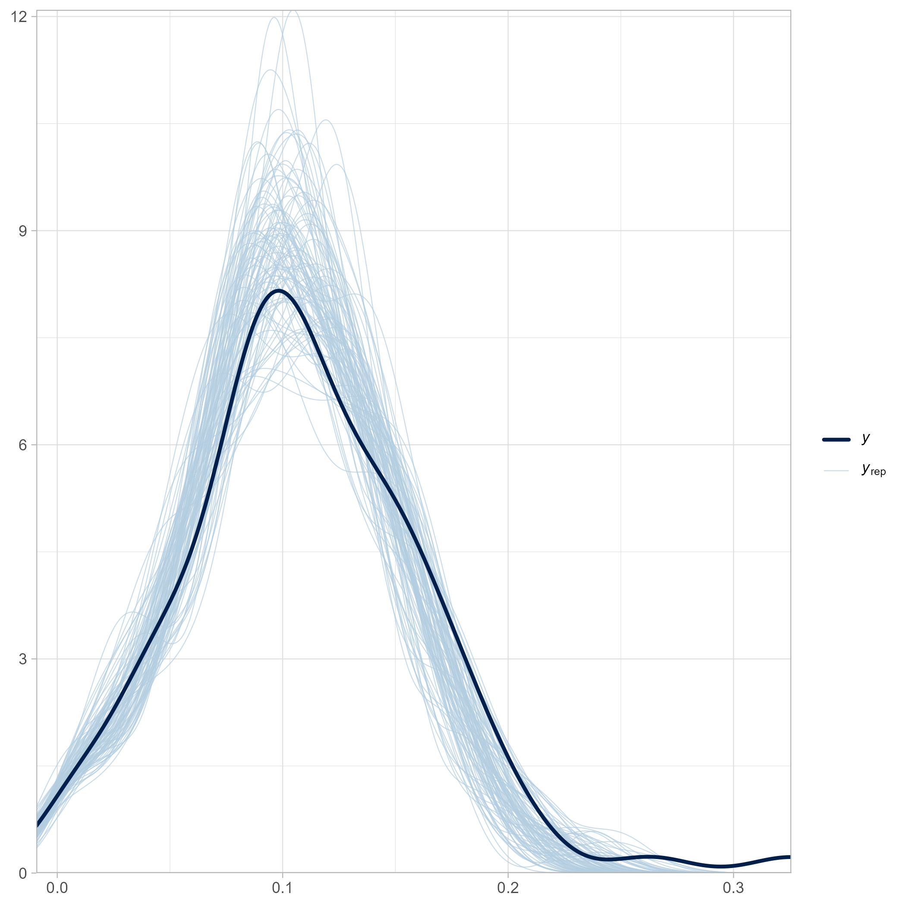
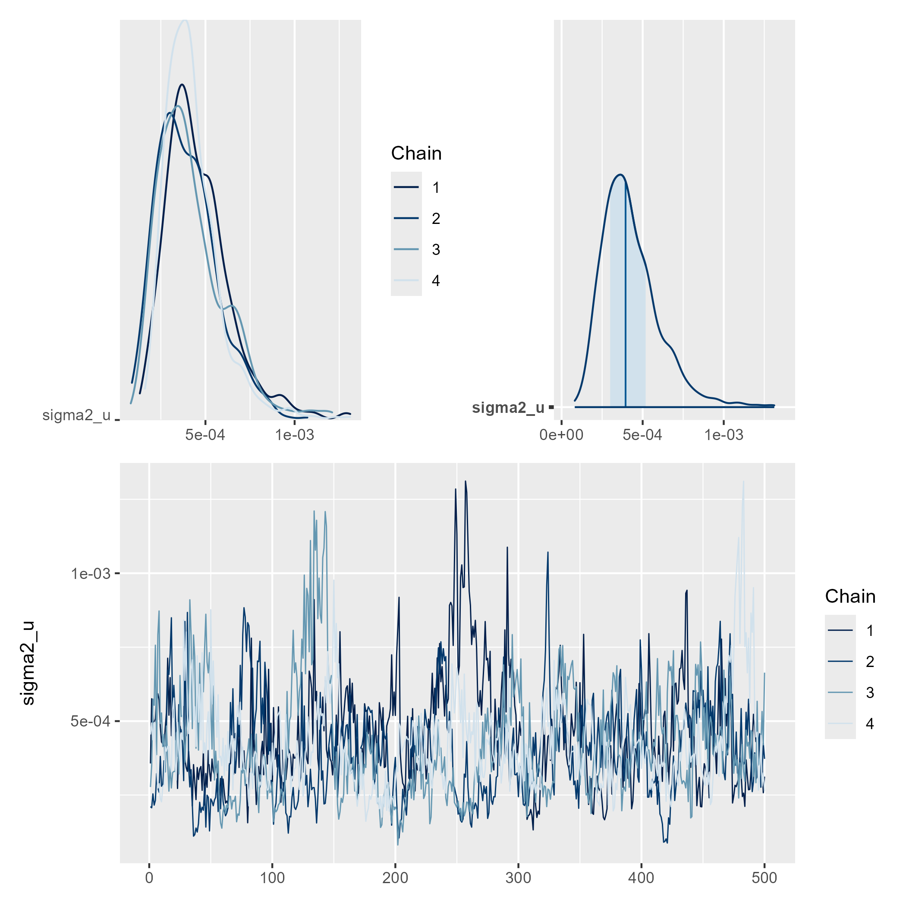
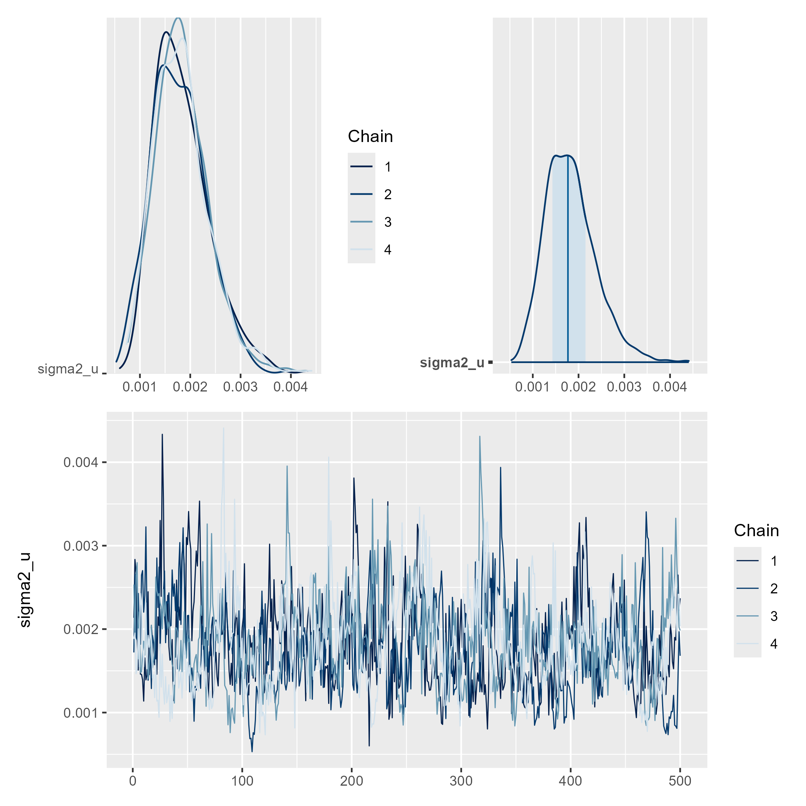
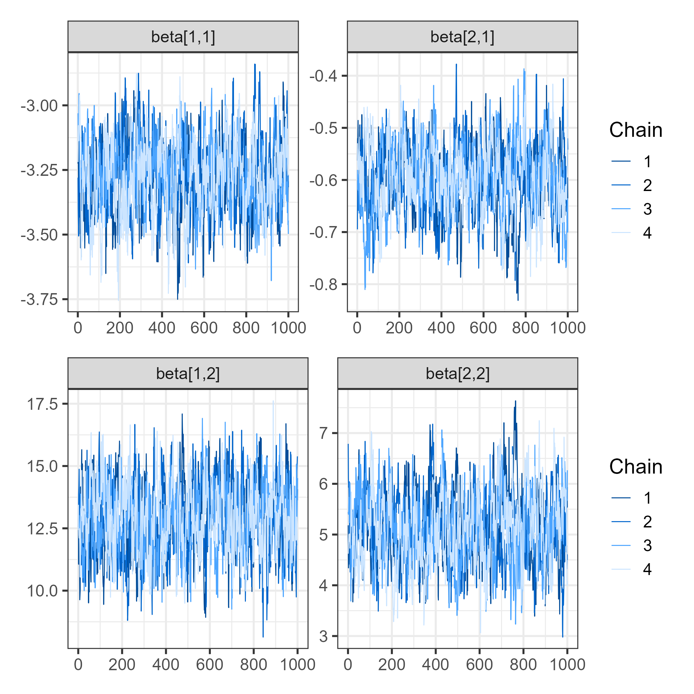

Estimación de indicadores de pobreza y mercado laboral
2025-11-10
El modelo de Fay III and Herriot (1979) es el modelo de área más utilizado en la estimación en áreas pequeñas.
Su popularidad radica en que suele disponerse de información agregada por dominios (departamentos, municipios, provincias), más que de microdatos a nivel individual.
Este modelo lineal mixto fue el primero en incorporar efectos aleatorios a nivel de área, permitiendo combinar la información muestral directa con covariables auxiliares externas.
\[ \theta_d = \boldsymbol{x}_d^{T}\boldsymbol{\beta} + u_d,\quad u_d \stackrel{ind}{\sim} (0,\sigma_u^2) \]
Los verdaderos valores \(\theta_d\) no son observables, por lo que se emplean estimadores directos:
\[ \hat{\theta}^{DIR}_d = \theta_d + e_d,\quad e_d \stackrel{ind}{\sim} (0,\sigma^2_{e_d}) \]
Sustituyendo en el modelo de Fay–Herriot se obtiene:
\[ \hat{\theta}^{DIR}_d = \boldsymbol{x}_d^{T}\boldsymbol{\beta} + u_d + e_d \]
donde \(\sigma^2_{e_d}\) representa la varianza del error de muestreo estimada a partir de la encuesta.
El mejor predictor lineal insesgado (BLUP) de \(\theta_d\) se define como:
\[ \tilde{\theta}^{FH}_d = \boldsymbol{x}_d^{T}\tilde{\boldsymbol{\beta}} + \tilde{u}_d, \quad \tilde{u}_d = \gamma_d(\hat{\theta}^{DIR}_d - \boldsymbol{x}_d^{T}\tilde{\boldsymbol{\beta}}) \]
donde
\[ \gamma_d = \frac{\sigma_u^2}{\sigma_u^2 + \sigma^2_{e_d}} \]
El parámetro \(\gamma_d\) actúa como factor de ponderación, reduciendo el sesgo de las estimaciones directas al incorporar información auxiliar.
Sea \(P_d\) la probabilidad de que una persona esté en pobreza en el dominio \(d\).
El modelo de área se define como:
\[ \hat{P}^{DIR}_d = \boldsymbol{x}_d^{T}\boldsymbol{\beta} + u_d + e_d \]
y se asume
\[ \hat{P}^{DIR}_d \mid u_d \sim N(\boldsymbol{x}_d^{T}\boldsymbol{\beta}+u_d, \sigma^2_{e_d}), \quad u_d \sim N(0, \sigma_u^2) \]
El modelo puede estimarse bajo un enfoque frecuentista o bayesiano, asignando priors a \(\boldsymbol{\beta}\) y \(\sigma_u^2\):
\[ \beta_p \sim N(0,10000), \quad \sigma_u^2 \sim IG(0.0001, 0.0001) \]
El predictor óptimo de \(P_d\) es el valor esperado condicional:
\[ E(P_d|\hat{P}^{DIR}_d) = \gamma_d\hat{P}^{DIR}_d + (1-\gamma_d)\boldsymbol{x}_d^{T}\boldsymbol{\beta} \]
con \[ \gamma_d = \frac{\sigma_u^2}{\sigma_u^2 + \sigma_{e_d}^2} \]
Este predictor combina la estimación directa con la predicha por el modelo, reduciendo la varianza en dominios con tamaños muestrales pequeños.
El modelo de Fay–Herriot permite obtener estimaciones más precisas en dominios pequeños.
La precisión depende de la relación entre la varianza del área (\(\sigma_u^2\)) y la varianza de muestreo (\(\sigma_{e_d}^2\)).
Un valor alto de \(\gamma_d\) indica mayor confianza en los datos muestrales, mientras que uno bajo da más peso a las covariables auxiliares.
Es la base de los enfoques modernos de estimación bayesiana y multinivel en SAE (Rao and Molina (2015)).
StanEl procedimiento de estimación utiliza las librerías tidyverse y magrittr para la manipulación y transformación de datos.
El modelo se implementa bajo un enfoque bayesiano mediante Stan.
Se cargan las estimaciones directas de pobreza y su varianza suavizada a nivel de dominio para el año 2017. Luego, se seleccionan las variables relevantes: dam2, nd, pobreza, vardir y hat_var.
Código de R
base_FH <- readRDS("data/pobreza/base_FH_2017.rds") %>%
select(dam2, nd, pobreza, vardir, hat_var)
head(base_FH) %>% tba()| dam2 | nd | pobreza | vardir | hat_var |
|---|---|---|---|---|
| 01101 | 6447 | 0.0764 | 1e-04 | 1e-04 |
| 01107 | 3015 | 0.1624 | 4e-04 | 5e-04 |
| 02101 | 5473 | 0.0905 | 1e-04 | 2e-04 |
| 02201 | 1759 | 0.0772 | 5e-04 | 4e-04 |
| 03101 | 3757 | 0.1011 | 3e-04 | 3e-04 |
| 03301 | 1221 | 0.1106 | 1e-04 | 7e-04 |
Se cargan los predictores auxiliares a nivel de dominio y se estandarizan para evitar problemas de escala.
Código de R
Se realiza una unión completa entre las estimaciones directas y las covariables, utilizando dam2 como clave. Esto asegura que se mantengan todos los dominios, observados y no observados.
Código de R
| dam2 | nd | pobreza | vardir | hat_var | area0 | area1 | etnia2 |
|---|---|---|---|---|---|---|---|
| 01101 | 6447 | 0.0764 | 1e-04 | 1e-04 | 0.0126 | 0.9874 | 0.0016 |
| 01107 | 3015 | 0.1624 | 4e-04 | 5e-04 | 0.0230 | 0.9770 | 0.0011 |
| 02101 | 5473 | 0.0905 | 1e-04 | 2e-04 | 0.0215 | 0.9785 | 0.0010 |
| 02201 | 1759 | 0.0772 | 5e-04 | 4e-04 | 0.0437 | 0.9563 | 0.0004 |
| 03101 | 3757 | 0.1011 | 3e-04 | 3e-04 | 0.0193 | 0.9807 | 0.0006 |
Los dominios con información muestral (pobreza no nula) se separan de los dominios sin información (NA).
Código de R
data_dir <- base_FH %>% filter(!is.na(pobreza))
data_syn <- base_FH %>% anti_join(data_dir %>% select(dam2))
tba(data_syn[1:10,1:8] %>% head())| dam2 | nd | pobreza | vardir | hat_var | area0 | area1 | etnia2 |
|---|---|---|---|---|---|---|---|
| 01401 | NA | NA | NA | NA | 0.3575 | 0.6425 | 0.0004 |
| 01402 | NA | NA | NA | NA | 1.0000 | 0.0000 | 0.0000 |
| 01403 | NA | NA | NA | NA | 1.0000 | 0.0000 | 0.0006 |
| 01404 | NA | NA | NA | NA | 0.5938 | 0.4062 | 0.0011 |
| 01405 | NA | NA | NA | NA | 0.5792 | 0.4208 | 0.0016 |
| 02102 | NA | NA | NA | NA | 0.0381 | 0.9619 | 0.0008 |
Se define la fórmula del modelo lineal con las variables predictoras.
A partir de ella, se construyen las matrices de diseño Xdat (observados) y Xs (no observados).
Código de R
formula_mod <- formula(~ sexo2 + anoest2 + anoest3 + anoest4 +
edad2 + edad3 + edad4 + edad5 +
etnia1 + etnia2 + tasa_desocupacion +
luces_nocturnas + cubrimiento_urbano +
pollution_CO + vegetation_NDVI +
Elevation + precipitation +
population_density + cubrimiento_cultivo +
alfabeta)
Xdat <- model.matrix(formula_mod, data = data_dir)
Xs <- model.matrix(formula_mod, data = data_syn)Se identifican y agregan columnas faltantes a Xs para asegurar que ambas matrices tengan la misma estructura.
Se crea la lista sample_data, que contiene toda la información necesaria para ejecutar el modelo en Stan.
Stan: dataA continuación, se presenta la estructura del modelo de Fay–Herriot en el lenguaje de modelado probabilístico Stan.
Código de Stan
Stan: parametersCódigo de Stan
parameters {
vector[p] beta; // coefficients for predictors
real<lower=0> sigma2_u;
vector[N1] u;
}
transformed parameters{
vector[N1] theta;
vector[N1] thetaSyn;
vector[N1] thetaFH;
vector[N1] gammaj;
real<lower=0> sigma_u;
thetaSyn = X * beta;
theta = thetaSyn + u;
sigma_u = sqrt(sigma2_u);
gammaj = to_vector(sigma_u ./ (sigma_u + sigma_e));
thetaFH = (gammaj) .* y + (1-gammaj).*thetaSyn;
}Stan: model y generatedSe ajusta el modelo de Stan utilizando la función stan() de la librería rstan. El modelo se guarda como objeto .rds para su posterior análisis.
Código de R
library(rstan)
fit_FH_normal <- "data/pobreza/modelosStan/17FH_normal.stan"
options(mc.cores = parallel::detectCores())
rstan::rstan_options(auto_write = TRUE)
model_FH_normal <- stan(
file = fit_FH_normal,
data = sample_data,
warmup = 500, iter = 1000, cores = 4, verbose = FALSE
)
saveRDS(model_FH_normal, "data/pobreza/model_FH_normal.rds")Para evitar recalcular el modelo, se puede cargar directamente el objeto ajustado.
Se evalúa la capacidad predictiva del modelo mediante comparaciones gráficas entre la distribución empírica y las distribuciones predictivas posteriores de pobreza:
Código de R
library(bayesplot)
library(posterior)
library(patchwork)
y_pred_B <- as.array(model_FH_normal, pars = "theta") %>%
as_draws_matrix()
rowsrandom <- sample(nrow(y_pred_B), 100)
y_pred2 <- y_pred_B[rowsrandom, ]
p1 <- ppc_dens_overlay(y = as.numeric(data_dir$pobreza), y_pred2) +
theme_light()
ggsave(filename = "data/img/FH1.png",plot = p1,scale = 2)Esta visualización compara la densidad observada \(y\) con las densidades simuladas \(\tilde{y}\) a partir de la distribución posterior, permitiendo identificar ajustes adecuados o desviaciones sistemáticas en la predicción.
El análisis de convergencia de las cadenas de Markov se realiza sobre el parámetro de varianza de los efectos aleatorios, \(\sigma^2_u\).
Se examinan los gráficos de densidad, áreas y trazas de MCMC:
Una convergencia adecuada se evidencia cuando las cadenas se mezclan bien y no presentan tendencias sistemáticas.
Se comparan tres estimaciones de pobreza obtenidas del modelo:
\(\theta_{\text{pred}}\): estimación a partir del modelo FH.
\(\theta_{\text{Syn}}\): estimación sintética basada en el componente fijo.
\(\theta_{\text{FH}}\): estimación combinada de Fay-Herriot.
\[ \text{Comparación: } (\theta_{\text{pred}}, \theta_{\text{FH}}), \; (\theta_{\text{Syn}}, \theta_{\text{FH}}), \; (\theta_{\text{dir}}, \theta_{\text{FH}}) \]
La coherencia entre estas estimaciones valida el buen desempeño del modelo en dominios observados.
Código de R
theta <- summary(model_FH_normal,pars = "theta")$summary %>%
data.frame()
thetaSyn <- summary(model_FH_normal,pars = "thetaSyn")$summary %>%
data.frame()
theta_FH <- summary(model_FH_normal,pars = "thetaFH")$summary %>%
data.frame()
data_dir %<>% mutate(
thetadir = pobreza,
theta_pred = theta$mean,
thetaSyn = thetaSyn$mean,
thetaFH = theta_FH$mean,
theta_pred_EE = theta$sd,
Cv_theta_pred = theta_pred_EE/theta_pred
)Código de R
# Estimación predicción del modelo vs ecuación ponderada de FH
p11 <- ggplot(data_dir, aes(x = theta_pred, y = thetaFH)) +
geom_point() +
geom_abline(slope = 1,intercept = 0, colour = "red") +
theme_bw(10)
# Estimación con la ecuación ponderada de FH Vs estimación sintética
p12 <- ggplot(data_dir, aes(x = thetaSyn, y = thetaFH)) +
geom_point() +
geom_abline(slope = 1,intercept = 0, colour = "red") +
theme_bw(10)
# Estimación con la ecuación ponderada de FH Vs estimación directa
p21 <- ggplot(data_dir, aes(x = thetadir, y = thetaFH)) +
geom_point() +
geom_abline(slope = 1,intercept = 0, colour = "red") +
theme_bw(10)
# Estimación directa Vs estimación sintética
p22 <- ggplot(data_dir, aes(x = thetadir, y = thetaSyn)) +
geom_point() +
geom_abline(slope = 1,intercept = 0, colour = "red") +
theme_bw(10)
p1 <- (p11+p12)/(p21+p22)
ggsave(filename = "data/img/FH3.png",plot = p1, scale = 2)A partir de las muestras posteriores de \(y_{\text{pred}}\), se obtienen estimaciones de pobreza para los dominios sin información directa.
Cada dominio no observado recibe una predicción \(\hat{\theta}_d\) con su error estándar asociado.
\[ \text{Cv}_{\hat{\theta}_d} = \frac{\text{EE}(\hat{\theta}_d)}{\hat{\theta}_d} \]
Estimación del FH de la pobreza en los dominios NO observados.
Código de R
theta_syn_pred <- summary(model_FH_normal,pars = "y_pred")$summary %>%
data.frame()
data_syn <- data_syn %>%
mutate(
theta_pred = theta_syn_pred$mean,
thetaSyn = theta_pred,
thetaFH = theta_pred,
theta_pred_EE = theta_syn_pred$sd,
Cv_theta_pred = theta_pred_EE/theta_pred)
saveRDS(data_syn, "data/pobreza/data_syn.rds")
saveRDS(data_dir, "data/pobreza/data_dir.rds")| dam2 | nd | pobreza | vardir | hat_var | theta_pred | thetaSyn | thetaFH | theta_pred_EE | Cv_theta_pred |
|---|---|---|---|---|---|---|---|---|---|
| 01401 | NA | NA | NA | NA | 0.0353 | 0.0353 | 0.0353 | 0.0415 | 1.1744 |
| 01402 | NA | NA | NA | NA | -0.0043 | -0.0043 | -0.0043 | 0.0668 | -15.4602 |
| 01403 | NA | NA | NA | NA | -0.0041 | -0.0041 | -0.0041 | 0.0673 | -16.4372 |
| 01404 | NA | NA | NA | NA | 0.0386 | 0.0386 | 0.0386 | 0.0408 | 1.0574 |
| 01405 | NA | NA | NA | NA | -0.3185 | -0.3185 | -0.3185 | 0.1031 | -0.3238 |
| 02102 | NA | NA | NA | NA | -0.0618 | -0.0618 | -0.0618 | 0.0489 | -0.7906 |
| 02103 | NA | NA | NA | NA | -0.6100 | -0.6100 | -0.6100 | 0.1688 | -0.2767 |
| 02104 | NA | NA | NA | NA | -0.0220 | -0.0220 | -0.0220 | 0.0358 | -1.6264 |
| 02202 | NA | NA | NA | NA | -0.1871 | -0.1871 | -0.1871 | 0.0733 | -0.3918 |
| 02203 | NA | NA | NA | NA | -0.0884 | -0.0884 | -0.0884 | 0.0471 | -0.5323 |
Finalmente, se consolidan las bases de estimaciones directas y sintéticas:
En su concepción más básica, el modelo de Fay-Herriot normal es una combinación lineal de covariables. El problema surge cuando el resultado de esta combinación puede salirse del rango \((0,1)\), propio de las proporciones. Para corregirlo, se aplica la transformación arcoseno:
\[ \hat{z}_d = arcsin\left( \sqrt{ \hat{\theta}_d} \right) \]
donde la varianza del estimador transformado es:
\[ Var\left( \hat{z}_d \right) = \frac{1}{4\times n_{d,efectivo} } \]
El modelo de Fay-Herriot transformado es:
\[ \begin{eqnarray*} Z_d \mid \mu_d,\sigma^2_d & \sim & N(\mu_d, \sigma^2_d)\\ \mu_d & = & \boldsymbol{x}^{T}_{d}\boldsymbol{\beta} + u_d \\ \theta_d & = & \left(\sin(\mu_d)\right)^2 \end{eqnarray*} \]
con \(u_d \sim N(0, \sigma^2)\) y priors:
\[ \boldsymbol{\beta} \sim N(0,1000), \quad \sigma_{u}^{2} \sim IG(0.0001,0.0001) \]
Stan: dataA continuación, se presenta la estructura del modelo de Fay–Herriot con transformación arcoseno en el lenguaje de modelado probabilístico Stan.
Código de Stan
Stan: parametersStan: model y generatedCódigo de Stan
model {
// likelihood
y ~ normal(lp, sigma_e);
// priors
beta ~ normal(0, 100);
u ~ normal(0, sigma_u);
sigma2_u ~ inv_gamma(0.0001, 0.0001);
}
generated quantities{
vector[N2] theta_pred;
vector[N2] lppred;
for(j in 1:N2) {
lppred[j] = normal_rng(Xs[j] * beta, sigma_u);
theta_pred[j] = pow(sin(lppred[j]), 2);
}
}| dam2 | pobreza | T_pobreza | n_effec | varhat |
|---|---|---|---|---|
| 01101 | 0.0764 | 0.2801 | 1579.7310 | 0.0002 |
| 01107 | 0.1624 | 0.4148 | 698.9342 | 0.0004 |
| 02101 | 0.0905 | 0.3055 | 597.6173 | 0.0004 |
| 02201 | 0.0772 | 0.2816 | 153.6090 | 0.0016 |
| 03101 | 0.1011 | 0.3236 | 617.7543 | 0.0004 |
| 03301 | 0.1106 | 0.3390 | 213.9843 | 0.0012 |
Código de R
| dam2 | pobreza | T_pobreza | n_effec | varhat | area0 | area1 | etnia2 |
|---|---|---|---|---|---|---|---|
| 01101 | 0.0764 | 0.2801 | 1579.7310 | 0.0002 | 0.0126 | 0.9874 | 0.0016 |
| 01107 | 0.1624 | 0.4148 | 698.9342 | 0.0004 | 0.0230 | 0.9770 | 0.0011 |
| 02101 | 0.0905 | 0.3055 | 597.6173 | 0.0004 | 0.0215 | 0.9785 | 0.0010 |
| 02201 | 0.0772 | 0.2816 | 153.6090 | 0.0016 | 0.0437 | 0.9563 | 0.0004 |
| 03101 | 0.1011 | 0.3236 | 617.7543 | 0.0004 | 0.0193 | 0.9807 | 0.0006 |
| 03301 | 0.1106 | 0.3390 | 213.9843 | 0.0012 | 0.1136 | 0.8864 | 0.0004 |
| 04101 | 0.1710 | 0.4263 | 304.0418 | 0.0008 | 0.0923 | 0.9077 | 0.0004 |
| 04102 | 0.1930 | 0.4548 | 251.5640 | 0.0010 | 0.0579 | 0.9421 | 0.0003 |
| 04203 | 0.1004 | 0.3223 | 170.9489 | 0.0015 | 0.2005 | 0.7995 | 0.0003 |
| 04301 | 0.0902 | 0.3051 | 129.4378 | 0.0019 | 0.2133 | 0.7867 | 0.0001 |
| dam2 | pobreza | T_pobreza | n_effec | varhat | area0 | area1 | etnia2 |
|---|---|---|---|---|---|---|---|
| 01401 | NA | NA | NA | NA | 0.3575 | 0.6425 | 0.0004 |
| 01402 | NA | NA | NA | NA | 1.0000 | 0.0000 | 0.0000 |
| 01403 | NA | NA | NA | NA | 1.0000 | 0.0000 | 0.0006 |
| 01404 | NA | NA | NA | NA | 0.5938 | 0.4062 | 0.0011 |
| 01405 | NA | NA | NA | NA | 0.5792 | 0.4208 | 0.0016 |
| 02102 | NA | NA | NA | NA | 0.0381 | 0.9619 | 0.0008 |
| 02103 | NA | NA | NA | NA | 1.0000 | 0.0000 | 0.0014 |
| 02104 | NA | NA | NA | NA | 0.1648 | 0.8352 | 0.0002 |
| 02202 | NA | NA | NA | NA | 1.0000 | 0.0000 | 0.0000 |
| 02203 | NA | NA | NA | NA | 0.4976 | 0.5024 | 0.0010 |
| inter | sexo2 | anoest2 | anoest3 | anoest4 | edad2 | edad3 | edad4 | edad5 | etnia1 | etnia2 | tasa_desocupacion | luces_nocturnas | cubrimiento_cultivo | alfabeta | pollution_CO | vegetation_NDVI | Elevation | precipitation | population_density |
|---|---|---|---|---|---|---|---|---|---|---|---|---|---|---|---|---|---|---|---|
| 1 | 0.5044 | 0.1360 | 0.4547 | 0.2711 | 0.2374 | 0.2338 | 0.2242 | 0.0926 | 0.1709 | 0.0016 | 0.0703 | -0.4713 | -0.9633 | 0.0285 | 0.0229 | -1.7713 | -0.0492 | 0.0057 | -0.3101 |
| 1 | 0.4998 | 0.1856 | 0.5305 | 0.0978 | 0.2723 | 0.2157 | 0.1863 | 0.0426 | 0.2949 | 0.0011 | 0.0851 | -0.1883 | -0.9633 | 0.0528 | 0.0229 | -1.7300 | 0.2182 | 0.0078 | -0.2644 |
| 1 | 0.4975 | 0.1356 | 0.4654 | 0.2543 | 0.2610 | 0.2324 | 0.2170 | 0.0789 | 0.0768 | 0.0010 | 0.0809 | -0.5137 | -0.9632 | 0.0312 | 0.0174 | -1.7986 | 2.0859 | 0.0081 | -0.3511 |
| 1 | 0.4808 | 0.1427 | 0.4830 | 0.2105 | 0.2399 | 0.2471 | 0.2232 | 0.0670 | 0.2392 | 0.0004 | 0.0827 | -0.4935 | -0.9609 | 0.0392 | 0.0161 | -1.8076 | 3.2817 | 0.0074 | -0.3535 |
| 1 | 0.5022 | 0.1581 | 0.4719 | 0.2309 | 0.2449 | 0.2099 | 0.2263 | 0.0883 | 0.1753 | 0.0006 | 0.0917 | -0.5352 | -0.9595 | 0.0428 | 0.0165 | -1.8203 | 2.0376 | 0.0069 | -0.3528 |
Código de R
library(rstan)
fit_FH_arcoseno <- "data/pobreza/modelosStan/15FH_arcsin_normal.stan"
options(mc.cores = parallel::detectCores())
rstan::rstan_options(auto_write = TRUE)
model_FH_arcoseno <- stan(
file = fit_FH_arcoseno,
data = sample_data,
verbose = FALSE,
warmup = 500,
iter = 1000,
cores = 4
)
saveRDS(model_FH_arcoseno,
"data/pobreza/model_FH_arcoseno.rds")
model_FH_arcoseno <- readRDS("data/pobreza/model_FH_arcoseno.rds")Código de R
library(bayesplot)
library(posterior)
library(patchwork)
y_pred_B <- as.array(model_FH_arcoseno, pars = "theta") %>%
as_draws_matrix()
rowsrandom <- sample(nrow(y_pred_B), 100)
y_pred2 <- y_pred_B[rowsrandom, ]
p1 <- ppc_dens_overlay(y = as.numeric(data_dir$pobreza), y_pred2) +
theme_light()
ggsave(filename = "data/img/FH_Asin.png",plot = p1, scale = 2)El gráfico permite comparar la distribución empírica de la pobreza observada con la distribución predictiva del modelo FH con transformación arcoseno.
Las gráficas muestran buena mezcla y estabilidad de las cadenas, lo cual sugiere convergencia del modelo.
Código de R
theta_FH_pred <- summary(model_FH_arcoseno, pars = "theta_pred")$summary %>%
data.frame()
data_syn <- data_syn %>%
mutate(pred_arcoseno = theta_FH_pred$mean,
pred_arcoseno_EE = theta_FH_pred$sd,
Cv_pred = pred_arcoseno_EE/pred_arcoseno)
data_arcoseno <- rbind(data_dir, data_syn) %>%
select(dam2, pobreza,
estimacion_arcoseno = pred_arcoseno,
ee_arcoseno = pred_arcoseno_EE,
cv_arcoseno = Cv_pred ) | dam2 | pobreza | estimacion_arcoseno | ee_arcoseno | cv_arcoseno | estimacion_normal | ee_normal | cv_normal | dam |
|---|---|---|---|---|---|---|---|---|
| 02103 | NA | 0.4883 | 0.2391 | 0.4895 | -0.6100 | 0.1688 | -0.2767 | 02 |
| 12103 | NA | 0.4159 | 0.2299 | 0.5529 | -0.5556 | 0.1682 | -0.3028 | 12 |
| 12302 | NA | 0.3989 | 0.2173 | 0.5448 | -0.5201 | 0.1601 | -0.3078 | 12 |
| 12303 | NA | 0.3362 | 0.2139 | 0.6362 | -0.4651 | 0.1639 | -0.3523 | 12 |
| 12104 | NA | 0.2849 | 0.1846 | 0.6481 | -0.4371 | 0.1443 | -0.3301 | 12 |
| 01405 | NA | 0.1302 | 0.1031 | 0.7918 | -0.3185 | 0.1031 | -0.3238 | 01 |
| 12102 | NA | 0.1038 | 0.0977 | 0.9418 | -0.2814 | 0.1175 | -0.4175 | 12 |
| 15201 | NA | 0.0451 | 0.0611 | 1.3525 | -0.2220 | 0.1170 | -0.5270 | 15 |
| 02302 | NA | 0.0324 | 0.0373 | 1.1514 | -0.2077 | 0.0727 | -0.3500 | 02 |
| 12402 | NA | 0.0278 | 0.0385 | 1.3856 | -0.1877 | 0.0800 | -0.4264 | 12 |
La transformación arcoseno garantiza que las estimaciones del modelo se mantengan en el rango \((0,1)\).
El modelo de Fay-Herriot permite combinar información directa y auxiliar, mejorando la precisión en dominios pequeños.
Las gráficas de densidad y convergencia sugieren que el ajuste fue adecuado y estable.
Los resultados finales proveen estimaciones coherentes para dominios observados y no observados.
La Encuesta de Caracterización Socioeconómica Nacional (CASEN), ejecutada por el Instituto Nacional de Estadísticas (INE) de Chile, constituye una de las principales fuentes de información para el seguimiento de la situación social y económica del país.
Entre sus objetivos se encuentra la medición de indicadores del mercado de trabajo, tales como la tasa de participación, ocupación y desempleo.
Sin embargo, los estimadores directos derivados de la encuesta suelen presentar alta variabilidad en dominios pequeños (regiones, provincias, comunas), lo que motiva el uso de modelos de área para mejorar la precisión y estabilidad de las estimaciones.
Los indicadores que se modelan de manera conjunta son:
Dado que las tres categorías son mutuamente excluyentes y exhaustivas, el vector de probabilidades \(\boldsymbol{\theta}_d = (p_{d1}, p_{d2}, p_{d3})'\) debe cumplir:
\[ \sum_{k=1}^{3} p_{dk} = 1 \]
Sea \(K\) el número de categorías de la variable de interés \(Y \sim Multinomial(\boldsymbol{\theta})\), con \(\boldsymbol{\theta} = (p_{1}, p_{2}, \dots , p_{K})\) y \(\sum_{k=1}^{K}p_{k}=1\).
Para el dominio \(d\):
\(N_d\): número total de personas.
\(N_{dk}\): número de personas en la categoría \(k\).
\(\hat{p}_{dk} = N_{dk}/N_d\): estimación directa de la proporción.
\(\hat{v}_{dk} = \widehat{Var}(\hat{p}_{dk})\): varianza estimada.
Dado que el efecto de diseño varía entre categorías, se define un tamaño muestral efectivo por categoría:
\[ \tilde{n}_{dk} = \frac{\tilde{p}_{dk} \times (1 - \tilde{p}_{dk})}{\hat{v}_{dk}} \]
De esta manera:
\[ \tilde{y}_{dk} = \tilde{n}_{dk} \times \hat{p}_{dk}, \quad \hat{n}_i = \sum_{k=1}^{K} \tilde{y}_{dk} \]
y se sigue que:
\[ \hat{y}_{dk} = \hat{n}_d \times \hat{p}_{dk} \]
El modelo multinomial a nivel de dominio se expresa como:
\[ (\tilde{y}_{d1}, \tilde{y}_{d2}, \tilde{y}_{d3}) \mid \hat{n}_d, \boldsymbol{\theta}_d \sim Multinomial(\hat{n}_d, \boldsymbol{\theta}_d) \]
donde las probabilidades \(p_{dk}\) se relacionan con covariables observadas mediante modelos logísticos multinivel.
Definiendo la categoría base como ocupado (\(k=1\)), se tiene:
\[ \ln\left(\frac{p_{d2}}{p_{d1}}\right) = \mathbf{X}_d^\top \boldsymbol{\beta_2} + u_{i2} \]
\[ \ln\left(\frac{p_{d3}}{p_{d1}}\right) = \mathbf{X}_d^\top \boldsymbol{\beta_3} + u_{d3} \]
donde \(u_{ik}\) son efectos aleatorios de área, con:
\[ (u_{i2}, u_{i3})' \sim N(\mathbf{0}, \boldsymbol{\Sigma_u}) \]
Usando la restricción \(\sum_{k=1}^3 p_{dk} = 1\), se obtiene:
\[ p_{d1} = \frac{1}{1 + e^{\mathbf{X}_d^\top \boldsymbol{\beta_2} + u_{d2}} + e^{\mathbf{X}_d^\top \boldsymbol{\beta_3} + u_{d3}}} \]
\[ p_{d2} = \frac{e^{\mathbf{X}_d^\top \boldsymbol{\beta_2} + u_{d2}}}{1 + e^{\mathbf{X}_d^\top \boldsymbol{\beta_2} + u_{d2}} + e^{\mathbf{X}_d^\top \boldsymbol{\beta_3} + u_{d3}}} \]
\[ p_{d3} = \frac{e^{\mathbf{X}_d^\top \boldsymbol{\beta_3} + u_{d3}}}{1 + e^{\mathbf{X}_d^\top \boldsymbol{\beta_2} + u_{i2}} + e^{\mathbf{X}_d^\top \boldsymbol{\beta_3} + u_{d3}}} \]
Código de R
library(survey)
library(tidyverse)
library(srvyr)
library(TeachingSampling)
library(haven)
library(bayesplot)
library(patchwork)
library(stringr)
library(rstan)
set_data <- readRDS('Data/empleo/encuesta2017CHL.Rds')
length_upm <- max(nchar(set_data[["_upm"]]))
length_estrato <- max(nchar(set_data[["_estrato"]]))
id_dominio <- "dam2"Código de R
set_data <- set_data %>%
transmute(
dam = as_factor(dam_ee, levels = "values"),
dam = str_pad(string = dam, width = 2, pad = "0"),
dam2 = as_factor(comuna, levels = "values"),
dam2 = str_pad(string = dam2, width = 5, pad = "0"),
nombre_dam = as_factor(dam_ee, levels = "labels"),
nombre_dam2 = as_factor(comuna, levels = "labels"),
upm = str_pad(`_upm`, width = length_upm, pad = "0"),
estrato = str_pad(`_estrato`, width = length_estrato, pad = "0"),
fep = `_fep`,
empleo = condact3
)Se calculan proporciones y estadísticas de empleo, desocupación e inactividad por dominio:
Código de R
indicador_dam <- diseno %>%
group_by_at(id_dominio) %>%
filter(empleo %in% c(1:3)) %>%
summarise(
n_ocupado = unweighted(sum(empleo == 1)),
n_desocupado = unweighted(sum(empleo == 2)),
n_inactivo = unweighted(sum(empleo == 3)),
Ocupado = survey_mean(empleo == 1, vartype = c("se", "var"), deff = TRUE),
Desocupado = survey_mean(empleo == 2, vartype = c("se", "var"), deff = TRUE),
Inactivo = survey_mean(empleo == 3, vartype = c("se", "var"), deff = TRUE)
)Código de R
indicador_dam <- set_data %>%
select(id_dominio, upm) %>%
distinct() %>%
group_by_at(id_dominio) %>%
tally(name = "n_upm") %>%
inner_join(indicador_dam, by = id_dominio)
indicador_dam1 <- indicador_dam %>%
filter(n_upm >= 2, !is.na(Desocupado_deff)) %>%
mutate(id_orden = 1:n())
saveRDS(indicador_dam1, "data/empleo/base_modelo.Rds")| dam2 | n_upm | n_ocupado | n_desocupado | n_inactivo | Ocupado | Ocupado_se | Ocupado_var | Ocupado_deff | Desocupado | Desocupado_se | Desocupado_var | Desocupado_deff | Inactivo | Inactivo_se | Inactivo_var | Inactivo_deff | id_orden |
|---|---|---|---|---|---|---|---|---|---|---|---|---|---|---|---|---|---|
| 01101 | 39 | 2973 | 239 | 1790 | 0.5975 | 0.0098 | 0.0001 | 2.0559 | 0.0478 | 0.0036 | 0e+00 | 1.4624 | 0.3547 | 0.0083 | 0.0001 | 1.5574 | 1 |
| 01107 | 16 | 1192 | 110 | 825 | 0.5619 | 0.0144 | 0.0002 | 1.8384 | 0.0539 | 0.0079 | 1e-04 | 2.6744 | 0.3842 | 0.0170 | 0.0003 | 2.6697 | 2 |
| 01401 | 2 | 104 | 10 | 78 | 0.5369 | 0.0220 | 0.0005 | 0.3792 | 0.0499 | 0.0129 | 2e-04 | 0.6816 | 0.4133 | 0.0349 | 0.0012 | 0.9771 | 3 |
| 01404 | 2 | 74 | 1 | 54 | 0.5772 | 0.0353 | 0.0012 | 0.6879 | 0.0095 | 0.0084 | 1e-04 | 1.0141 | 0.4132 | 0.0438 | 0.0019 | 1.0627 | 4 |
| 01405 | 2 | 87 | 3 | 64 | 0.5630 | 0.0052 | 0.0000 | 0.0179 | 0.0188 | 0.0021 | 0e+00 | 0.0398 | 0.4182 | 0.0073 | 0.0001 | 0.0359 | 5 |
| 02101 | 32 | 2283 | 244 | 1750 | 0.5448 | 0.0135 | 0.0002 | 3.2106 | 0.0557 | 0.0037 | 0e+00 | 1.1478 | 0.3995 | 0.0128 | 0.0002 | 2.9752 | 6 |
| 02104 | 2 | 102 | 6 | 61 | 0.5391 | 0.0386 | 0.0015 | 1.0259 | 0.0576 | 0.0112 | 1e-04 | 0.3956 | 0.4034 | 0.0274 | 0.0008 | 0.5336 | 7 |
| 02201 | 13 | 788 | 65 | 504 | 0.5850 | 0.0154 | 0.0002 | 1.3340 | 0.0482 | 0.0034 | 0e+00 | 0.3557 | 0.3669 | 0.0143 | 0.0002 | 1.2059 | 8 |
| 02203 | 4 | 106 | 3 | 51 | 0.6463 | 0.0139 | 0.0002 | 0.1418 | 0.0224 | 0.0145 | 2e-04 | 1.6103 | 0.3312 | 0.0248 | 0.0006 | 0.4666 | 9 |
| 02301 | 4 | 171 | 22 | 131 | 0.5009 | 0.0316 | 0.0010 | 1.3136 | 0.0939 | 0.0274 | 7e-04 | 2.8849 | 0.4052 | 0.0520 | 0.0027 | 3.6839 | 10 |
STANVariable respuesta por dominio: \(Y_d = (\text{ocupado}, \text{desocupado}, \text{inactivo})\)
Distribución: \(Y_d \mid n_d, \boldsymbol{\theta}_d \sim \text{Multinomial}(n_d, \boldsymbol{\theta}_d)\)
Código de Stan
Stan: parameters y transformed parametersCódigo de Stan
parameters {
matrix[P-1, K] beta;// matriz de parámetros
vector<lower=0>[P-1] sigma_u; // random effects standard deviations
// declare L_u to be the Choleski factor of a 2x2 correlation matrix
cholesky_factor_corr[P-1] L_u;
matrix[P-1, D] z_u;
}
transformed parameters {
simplex[P] theta[D];// vector de parámetros;
real num[D, P];
real den[D];
// this transform random effects so that they have the correlation
// matrix specified by the correlation matrix above
matrix[P-1, D] u; // random effect matrix
u = diag_pre_multiply(sigma_u, L_u) * z_u;
for(d in 1:D){
num[d, 1] = 1;
num[d, 2] = exp(X_obs[d, ] * beta[1, ]' + u[1, d]) ;
num[d, 3] = exp(X_obs[d, ] * beta[2, ]' + u[2, d]) ;
den[d] = sum(num[d, ]);
}
for(d in 1:D){
for(p in 2:P){
theta[d, p] = num[d, p]/den[d];
}
theta[d, 1] = 1/den[d];
}
}Stan: model y generated quantitiesCódigo de Stan
model {
L_u ~ lkj_corr_cholesky(1); // LKJ prior for the correlation matrix
to_vector(z_u) ~ normal(0, 10000);
// sigma_u ~ cauchy(0, 50);
sigma_u ~ inv_gamma(0.0001, 0.0001);
for(p in 2:P){
for(k in 1:K){
beta[p-1, k] ~ normal(0, 10000);
}
}
for(d in 1:D){
target += multinomial_lpmf(hat_y[d, ] | theta[d, ]);
}
}
generated quantities {
matrix[D1,P] theta_pred;
matrix[2, 2] Omega;
Omega = L_u * L_u'; // so that it return the correlation matrix
theta_pred = pred_theta(X_pred, P, beta);
}Stan: functionsCódigo de Stan
functions {
matrix pred_theta(matrix Xp, int p, matrix beta){
int D1 = rows(Xp);
real num1[D1, p];
real den1[D1];
matrix[D1,p] theta_p;
for(d in 1:D1){
num1[d, 1] = 1;
num1[d, 2] = exp(Xp[d, ] * beta[1, ]' ) ;
num1[d, 3] = exp(Xp[d, ] * beta[2, ]' ) ;
den1[d] = sum(num1[d, ]);
}
for(d in 1:D1){
for(i in 2:p){
theta_p[d, i] = num1[d, i]/den1[d];
}
theta_p[d, 1] = 1/den1[d];
}
return theta_p ;
}
}STANCódigo de R
statelevel_predictors_df <-
readRDS('data/empleo/statelevel_predictors_df_dam2.rds')
## Estandarizando las variables para controlar el efecto de la escala.
statelevel_predictors_df %<>%
mutate_at(vars("luces_nocturnas",
"cubrimiento_cultivo",
"cubrimiento_urbano",
"modificacion_humana",
"accesibilidad_hospitales",
"accesibilidad_hosp_caminado"),
function(x)as.numeric(scale(x)))En el bloque de código se identifican que dominios serán los predichos.
Creando la matriz de covariables para los dominios no observados (X_pred) y los observados (X_obs)
Código de R
D <- nrow(indicador_dam1)
P <- 3 # Ocupado, desocupado, inactivo.
Y_tilde <- matrix(NA, D, P)
n_tilde <- matrix(NA, D, P)
Y_hat <- matrix(NA, D, P)
# n efectivos ocupado
n_tilde[,1] <- (indicador_dam1$Ocupado*(1 - indicador_dam1$Ocupado))/indicador_dam1$Ocupado_var
Y_tilde[,1] <- n_tilde[,1]* indicador_dam1$OcupadoCódigo de R
# n efectivos desocupado
n_tilde[,2] <- (indicador_dam1$Desocupado*(1 - indicador_dam1$Desocupado))/indicador_dam1$Desocupado_var
Y_tilde[,2] <- n_tilde[,2]* indicador_dam1$Desocupado
# n efectivos Inactivo
n_tilde[,3] <- (indicador_dam1$Inactivo*(1 - indicador_dam1$Inactivo))/indicador_dam1$Inactivo_var
Y_tilde[,3] <- n_tilde[,3]* indicador_dam1$InactivoCódigo de R
ni_hat = rowSums(Y_tilde)
Y_hat[,1] <- ni_hat* indicador_dam1$Ocupado
Y_hat[,2] <- ni_hat* indicador_dam1$Desocupado
Y_hat[,3] <- ni_hat* indicador_dam1$Inactivo
Y_hat <- round(Y_hat)
png("data/img/theta_ajustado.png",
width = 1200, height = 400, res = 120)
hat_p <- Y_hat/rowSums(Y_hat)
par(mfrow = c(1,3))
plot(hat_p[,1],indicador_dam1$Ocupado)
abline(a = 0,b=1,col = "red")
plot(hat_p[,2],indicador_dam1$Desocupado)
abline(a = 0,b=1,col = "red")
plot(hat_p[,3],indicador_dam1$Inactivo)
abline(a = 0,b=1,col = "red")
dev.off()Código de R
fit_mcmc2 <- stan(
file = "data/empleo/modelosStan/00 Multinomial_simple_no_cor.stan", # Stan program
data = sample_data, # named list of data
verbose = TRUE,
warmup = 1000, # number of warmup iterations per chain
iter = 2000, # total number of iterations per chain
cores = 4, # number of cores (could use one per chain)
)
saveRDS(fit_mcmc2,
"data/empleo/fit_multinomial_no_cor.Rds")Código de R
theta_1<- grep(pattern = "1]",x = colnames(y_pred_B),value = TRUE)
theta_2<- grep(pattern = "2]",x = colnames(y_pred_B),value = TRUE)
theta_3<- grep(pattern = "3]",x = colnames(y_pred_B),value = TRUE)
y_pred1 <- y_pred_B[rowsrandom,theta_1 ]
y_pred2 <- y_pred_B[rowsrandom,theta_2 ]
y_pred3 <- y_pred_B[rowsrandom,theta_3 ]Código de R
color_scheme_set("brightblue")
theme_set(theme_bw(base_size = 15))
p1 <- ppc_dens_overlay(y = as.numeric(theta_dir$Ocupado), y_pred1)/
ppc_dens_overlay(y = as.numeric(theta_dir$Desocupado), y_pred2)/
ppc_dens_overlay(y = as.numeric(theta_dir$Inactivo), y_pred3)
ggsave(filename = "data/img/ppc_empleo.png",plot = p1, scale = 2)
Evalúa la convergencia de las cadenas y la estabilidad de los efectos aleatorios.
El modelo multinomial permite integrar simultáneamente múltiples categorías del mercado laboral.
La estructura jerárquica capta la variabilidad entre dominios y reduce la inestabilidad de los estimadores.
Este enfoque es adecuado para la producción de indicadores regionales coherentes y comparables.